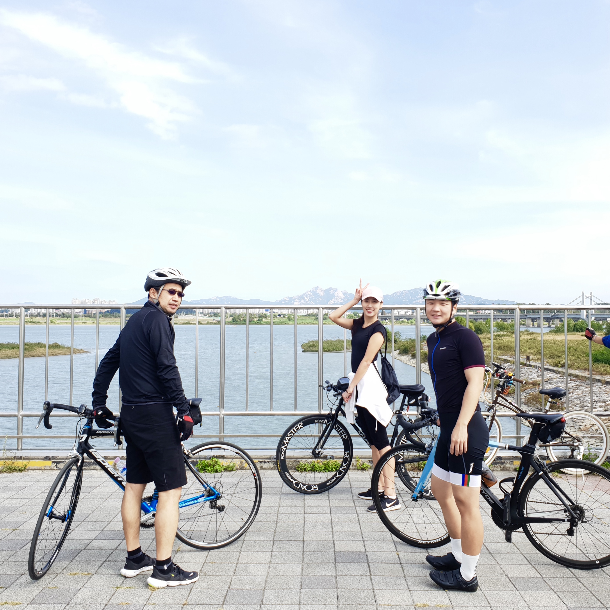

I sometimes pour my creative energy doodling on my iPhone.
Follow my doodles on my instagram @doodlemenga.
I am currently living in Seoul and have lived most of life in Korea. But I had spent six years of my teenage years in Cairo, Egypt, which has shaped a big part of my identity.
When I’m not doing research, I love to keep myself outdoors biking, jogging, or hiking. Recently I found a new passion in surfing, so on the weekends you will probably find me in the East, West, and South coasts of Korea where the good waves are.
I sometimes pour my creative energy doodling on my iPhone.
Follow my doodles on my instagram @doodlemenga.